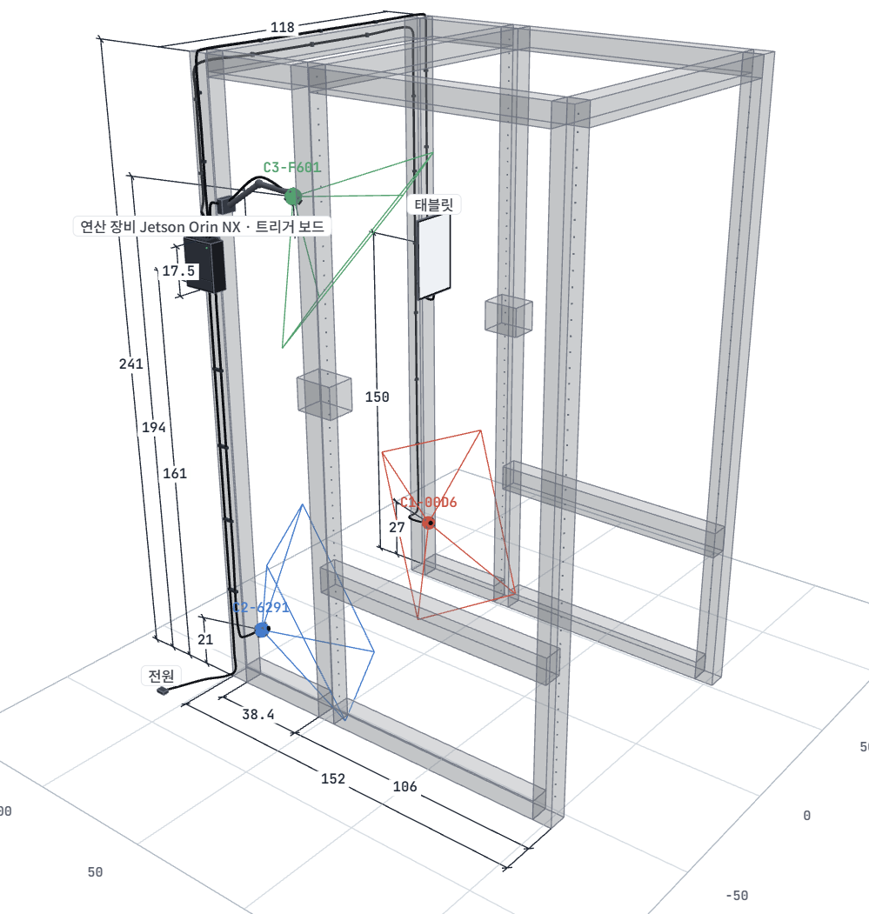
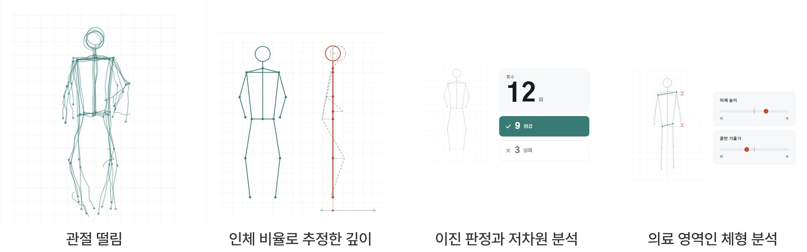
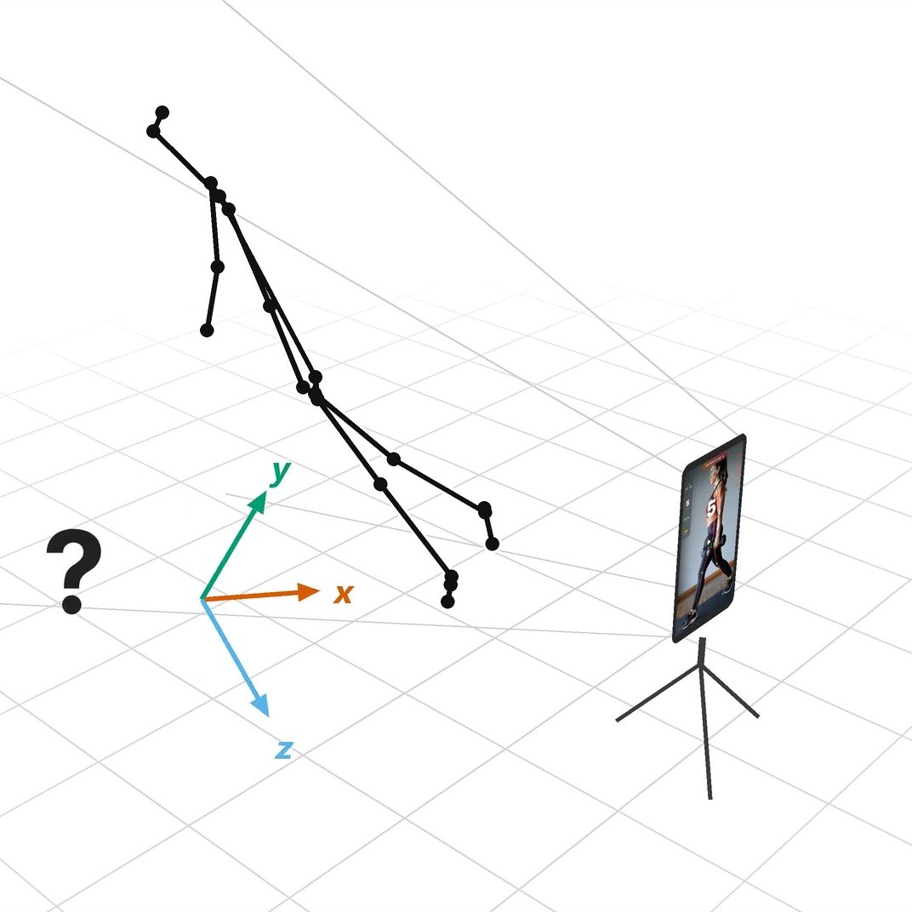
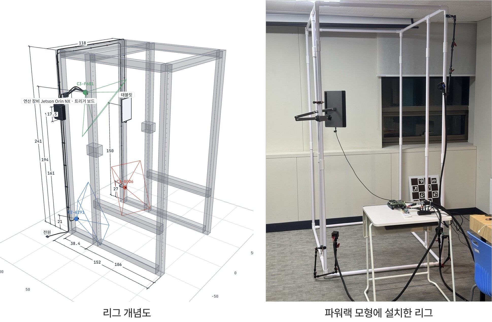
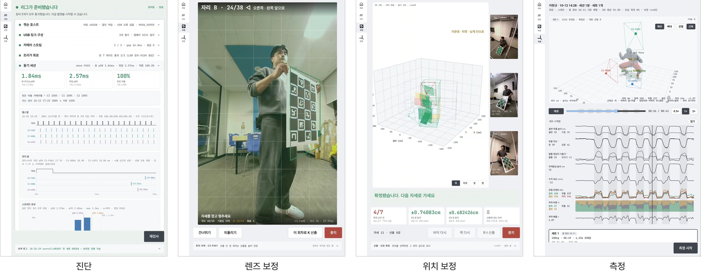
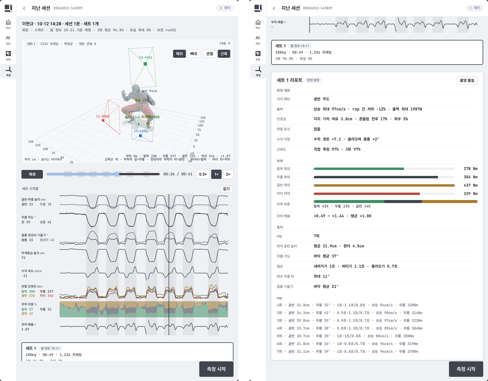
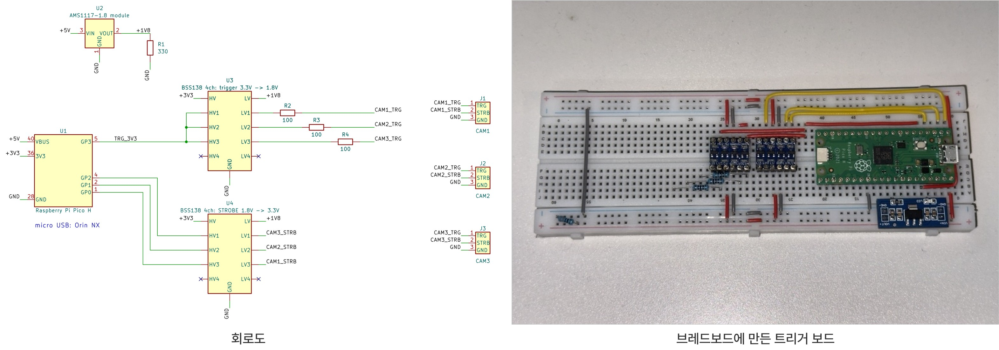
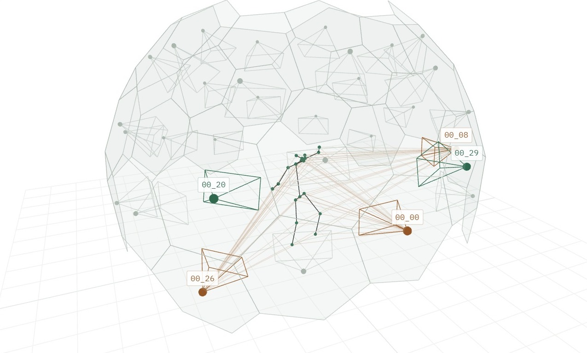
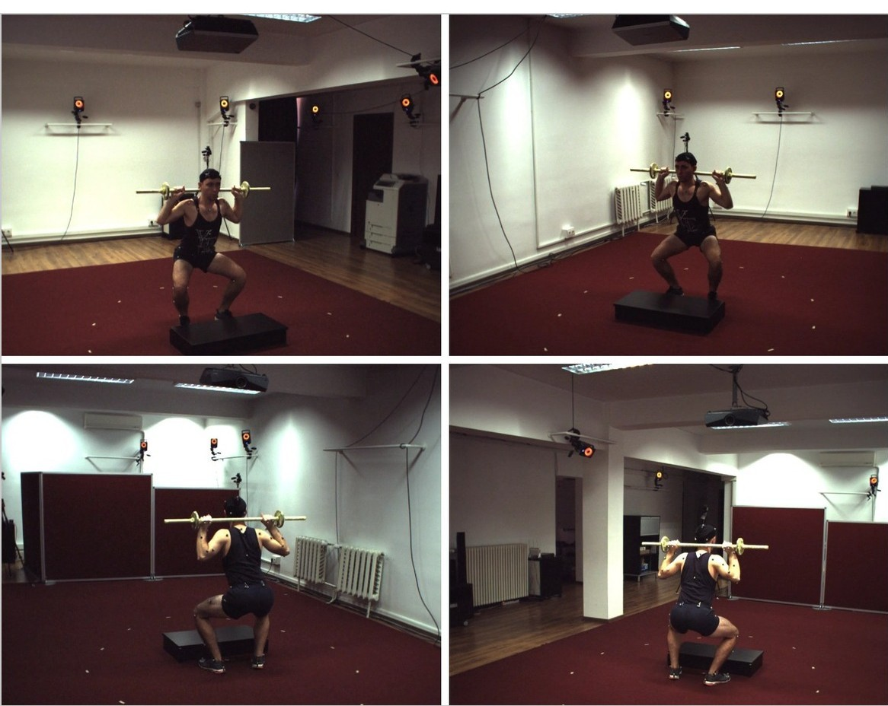
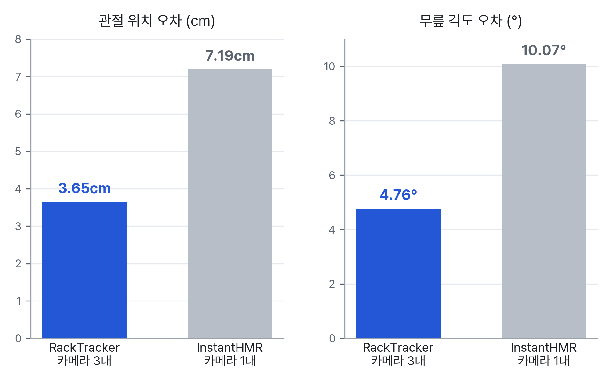

사업계획서 · 2026-11
파워랙에 고정한 카메라 3대로 스쿼트를 3D로 측량하고, 반복마다 관절별 하중 분배를 계산하는 헬스장용 모션캡처 장치

실측값은 작성일 기준입니다. 매출과 가격은 가정에 따른 추정이며 본문에 가정을 표시했습니다. 청구 범위와 세부 계산 기준은 싣지 않았습니다.
RackTracker는 헬스장 파워랙에 덧붙이는 3D 모션캡처 장치입니다. 랙 기둥에 고정한 카메라 3대가 한 신호에 맞춰 같은 순간을 찍고, 랙 옆의 소형 컴퓨터가 관절의 3D 위치를 cm 단위로 복원합니다. 여기에 회원의 체중과 바 무게를 더해 반복마다 관절별 하중 분배를 계산합니다.
관절 하중은 바와 몸의 무게가 관절에 거는 모멘트로, 단위는 Nm입니다. 관절별 하중 분배는 세 가지를 함께 적은 결과입니다. 무게중심이 발 위 어디에 실렸는지, 발목과 무릎, 골반(엉덩관절), 허리에 각각 얼마의 관절 하중이 걸렸는지, 그 하중을 어느 근육군이 받았는지입니다. 2026년 11월 상명대학교 휴먼AI공학전공 졸업작품 심사에서 23팀 중 1위로 대상을 받았습니다.
| 항목 | 내용 |
|---|---|
| 문제 | 헬스장 코칭에는 관절 하중을 잴 수단이 없습니다. 트레이너는 각도와 궤적 같은 겉모습을 보고 지도하고, 지도의 결과를 기록으로 증명하지 못합니다. |
| 해결 | 랙에 고정한 카메라 3대와 소형 컴퓨터가 촬영 환경을 표준화합니다. 3D 관절로 반복마다 관절별 하중 분배를 계산해 세트마다 리포트로 남깁니다. |
| 차별점 | 하드웨어 신호로 묶은 세 방향 동시 촬영, 랙 고정으로 표준화한 촬영 환경, 체중과 몸의 비율을 반영한 역학 계산, 영상이 장치 밖으로 나가지 않는 폐쇄망 처리입니다. |
| 검증 | 마커 모션캡처 정답이 있는 공개 데이터셋에서 관절 위치 오차 3.63cm를 냈습니다. 같은 장면을 위치와 크기를 맞춰 견주면 카메라 1대 AI 모델보다 관절 위치 오차가 2.0배, 무릎 각도 오차가 2.1배 작습니다. |
| 사업 모델 | 파워랙 1대를 단위로 장치를 팔고 분석 소프트웨어 사용료를 매달 받습니다. 국비 지원 사업인 스마트상점 기술보급사업에 기술공급기업으로 등록해 헬스장의 초기 부담을 낮춥니다. |
| 현재 | 진단과 보정부터 측정과 리포트까지 태블릿 앱 하나로 이어지는 프로토타입을 Jetson Orin NX 위에서 운용하고 있습니다. 다음 단계는 실제 파워랙용 설치형 시제품과 헬스장 파일럿입니다. |
| 일정 | 2027년 상반기 설치형 시제품과 파일럿, 하반기 기술공급기업 등록 신청, 2027년 말 양산형 전환입니다. |
헬스장 시장은 과잉 공급 상태입니다. 출혈 경쟁 끝에 월 3만원대 회원권이 표준으로 굳어져, 헬스장은 수익의 상당 부분을 PT에 기댑니다. 트레이너는 기본급 없는 인센티브 구조에서 영업 실적으로 보상받아, 지도 실력보다 영업 능력이 보상받습니다. 국내 헬스장은 5년 안에 82%가 문을 닫습니다. 시설은 대당 수천만원대 기구와 호텔급 인테리어로 고급화됐지만, 지도 방식은 구전되는 경험에 머물러 있습니다.
법적 진입 장벽이 없어 관련 교육을 받지 않은 사람도 프리랜서로 일하고, 평가 기준은 지도 역량이 아니라 매출입니다. 2026년 1월에는 국가공인 자격자만 강습하도록 하는 체육시설법 개정안이 발의됐습니다. 지도 품질이 소비자 안전에 직결된 사회 문제로 인정받은 것입니다. 그러나 자격 제도는 지도자의 이력을 증명할 뿐, 회원 개개인의 움직임을 분석하지는 못합니다.
바닥에 있는 원인은 관절 하중을 잴 수단이 없다는 것입니다. 지금의 PT 지도와 자세 분석 앱은 무릎 각도와 바의 궤적 같은 겉모습을 기준으로 삼습니다. 이런 기준은 관절 하중을 잴 수 없어 대신 보는 대리 지표입니다. 같은 자세라도 허벅지 뼈 길이와 몸통 비율에 따라 관절에서 무게중심까지의 거리가 달라져, 하중이 다른 관절로 갑니다. 모두에게 맞는 정답 자세가 없으니, 겉모습만으로는 위험한 반복을 가려낼 수 없습니다.
측정 수단이 없으면 시장도 지도 품질을 가리지 못합니다. 트레이너는 실력을 증명할 수 없고, 헬스장과 회원은 실력을 알 수 없어 가격과 인상으로 트레이너를 고르게 됩니다. 계약 뒤에도 지도의 질과 부상의 책임을 확인할 방법이 없습니다. 측정 수단은 트레이너에게는 실력을 증명할 기록을, 헬스장과 회원에게는 선별 기준과 평가 근거를 줍니다.
정량 분석을 바라는 수요가 커서 딥러닝 기반 마커리스 자세 추정 서비스가 쏟아지고 있습니다. 그러나 정밀하지만 헬스장에 들일 수 없는 것과, 들일 수 있지만 깊이를 짐작하는 것 사이가 비어 있습니다.
| 기존 해법 | 한계 |
|---|---|
| 연구용 모션캡처 | 몸에 마커를 붙이는 마커 모션캡처는 정확도의 기준이지만, 카메라 수십 대와 전용 공간이 필요합니다. 촬영 뒤 긴 후처리를 거쳐야 결과가 나오고 연산 비용도 커서 헬스장에 들일 수 없습니다. |
| 스마트폰 자세 교정 앱 | 카메라 한 대로 찍어 깊이를 평균 체형으로 짐작합니다. 사람의 실제 크기와 위치를 cm 단위로 정할 수 없어 관절 하중을 계산하지 못합니다. 바벨과 랙에 가려진 관절은 끊깁니다. |
| 헬스장용 체형 분석 키오스크 | 카메라 한 대로 주로 정지 자세의 체형 불균형을 봅니다. 스마트상점 기술보급사업에 보급가 710만~780만원(VAT 별도)으로 올라 있지만, 바벨을 든 운동의 관절 하중은 다루지 않습니다. |
| 바벨 속도 측정기(VBT) | 바벨의 속도와 이동 경로만 다룹니다. 관절 각도와 관절 하중은 내놓지 않아 속도는 알아도 자세는 모릅니다. |
| 센서 내장 스마트 머신 | 정해진 궤적을 따라 움직이는 기구의 토크만 잽니다. 프리웨이트 동작에는 쓸 수 없습니다. |
카메라 한 대로 찍는 앱과 장치는 관절이 떨리고, 깊이를 인체 비율로 짐작합니다. 그래서 결과가 횟수 세기와 성공 실패 판정, 정지 자세의 체형 분석에 그칩니다(그림 1).

카메라 한 대로 그린 3D 자세는 찍은 방향에서는 사진과 맞지만, 옆에서 보면 깊이가 틀려 몸이 뒤로 기울어 있고 바닥 위 위치도 정해지지 않습니다(그림 2).

대표는 고중량 트레이닝을 하는 개발자입니다. 가벼운 무게로 워밍업하다 허리 디스크를 다친 뒤 공부해 보니, 관절에 걸리는 하중은 몇 kg을 드는가보다 그 무게가 몸의 어디로 실리는가에 달려 있었습니다. 같은 무게라도 무게중심이 관절에서 몇 cm 벗어나면 관절 하중은 지렛대의 원리로 몇 배가 됩니다. 다치기 전에도 시간당 6만원을 내고 PT를 받았지만, 지도의 근거는 트레이너 사이에 전해지는 경험이었습니다. 트레이너의 자질 문제가 아니었습니다. 관절 하중을 잴 수단이 없으니 누구든 감과 사후 관찰에 기댈 수밖에 없었습니다.
논문과 영상으로 스스로 공부해 보았지만, 같은 기전을 두고 상반된 주장이 공존했고 그중 어느 것이 자기 골격에 맞는지 판단할 근거가 없었습니다. 원한 것은 존재하지 않는 정답 자세가 아니라, 자기 몸의 움직임을 물리학으로 분석해 부상을 막을 수단이었습니다. 그래서 파워랙에 고정한 카메라 여러 대로 관절을 3D로 기록하고, 관절 하중까지 계산하는 장치를 직접 만들었습니다.
RackTracker의 장치는 파워랙에 붙이는 리그 한 벌입니다. 리그는 카메라 3대, 트리거 보드, 연산 장비, 태블릿으로 이루어집니다(그림 3). 카메라는 120도 렌즈의 글로벌 셔터 카메라로, 화면 전체를 같은 순간에 노출해 빠른 동작도 휘지 않게 찍습니다. 트리거 보드는 세 카메라에 노출 신호를 한 번에 보내는 소형 보드이고, 연산 장비는 소형 컴퓨터 Jetson Orin NX 16GB 한 대입니다.
카메라 3대는 1920×1200 해상도로 초당 30번 같은 순간을 찍고, 연산 장비는 33.3ms마다 3D 관절을 새로 냅니다. 태블릿은 USB 선 하나로 연산 장비에 이어져 화면만 띄웁니다. 헬스장은 기존 파워랙에 리그만 덧붙이면 되고 기구를 새로 사지 않아도 됩니다.

리그 운용은 진단, 렌즈 보정, 위치 보정, 측정의 네 절차이고, 모두 태블릿 앱 하나에서 이어집니다(그림 4). 진단은 카메라와 동기 신호를 자동으로 점검합니다. 렌즈 보정은 카메라마다 렌즈의 초점 거리와 왜곡을 재고, 위치 보정은 세 카메라 사이의 위치와 방향을 잽니다. 두 보정은 격자 무늬를 인쇄한 캘리브레이션 보드를 찍어 하며, 설치할 때 한 번 하고 카메라가 움직였을 때만 다시 합니다. 회원은 태블릿에서 자기 이름을 고르고 바 무게를 넣은 뒤 평소처럼 운동합니다.

3D 관절은 두 가지로 나옵니다. 화면값은 세트 중에 태블릿에 바로 그리는 3D 관절로, 촬영부터 표시까지 중앙값 251ms가 걸립니다. 확정값은 앞뒤 순간까지 더해 다듬어 저장하는 3D 관절로, 화면값보다 20초쯤 늦게 따라옵니다.
세트 리포트는 세트가 끝난 뒤 확정값으로 관절별 하중 분배를 적은 화면입니다(그림 5). 화면은 3D 재생, 세트 시계열, 요약표의 세 부분입니다. 3D 재생은 회원의 몸에 맞춘 인체 메쉬 위에 근육군을 빨강의 짙기로 칠합니다. 관절 하중은 그 관절을 펴는 근육군이 받는다고 보고, 발목은 종아리, 무릎은 허벅지 앞, 골반은 엉덩이와 허벅지 뒤, 허리는 허리 뒤 근육에 칠합니다. 세트 시계열은 골반 높이와 무릎 각도부터 관절 하중까지 차트 8개로 보여 주고, 요약표에는 하중을 무릎과 골반 중 어느 쪽으로 주로 받았는지, 관절마다의 최대 관절 하중, 반복별 기록이 붙습니다.
체형 정보는 헬스장에 흔한 인바디(체성분 측정기)의 결과 파일을 태블릿에서 올려 받습니다. 체중과 성별은 관절 하중 계산에 쓰고, 체지방량과 부위별 근육량은 메쉬의 모양을 정하는 데 씁니다.

트리거 보드의 신호 하나에 카메라 3대가 같은 순간을 찍습니다(그림 6). 신호 없이 따로 찍으면 가장 가까운 사진끼리 짝지어도 촬영 간격 33.3ms의 절반인 16.7ms까지 벌어집니다. 리그의 세 카메라 노출 시각 차는 중앙값 0.12ms이고, 가장 크게 벌어진 때도 0.16ms입니다. 세 번 잰 시험에서는 매번 1,000번 안팎의 신호마다 세 카메라의 사진이 빠짐없이 도착했습니다.
삼각측량은 위치를 아는 카메라 여러 대가 본 같은 점의 사진 위 좌표로 그 점의 공간 위치를 푸는 계산입니다. 리그는 사진마다 관절 33개를 찾아 세 방향에서 삼각측량하고, 한 방향이 바벨이나 기둥에 가리면 나머지 두 방향으로 살립니다.

카메라가 랙에 고정되어 있어 보정은 설치할 때 한 번이면 됩니다. 카메라 자리는 공개 데이터셋 CMU Panoptic에서 먼저 시험했습니다. Panoptic의 촬영 돔에는 카메라 수백 대의 영상과 3D 관절 정답이 함께 있어, 그중 파워랙에 달 수 있는 자리의 카메라만 골라 리그와 같은 배치를 만들 수 있습니다. 앞쪽 1대와 양옆 2대가 이렇게 고른 배치입니다(그림 7). 실제 자리는 3대 조합 34,560개를 시뮬레이션으로 비교해 정하고, PVC 파워랙 모형에 달아 전신이 들어오는지 실측으로 확인했습니다. 촬영 조건이 매번 같아 지난 세션과 새 세션을 같은 기준으로 비교할 수 있습니다.

같은 자세라도 뼈 길이와 몸통 비율에 따라 관절 하중이 다르므로, 리그는 정답 자세를 정해 두고 각도로 판정하지 않습니다. 3D 관절에 회원의 체중과 성별, 인체 분절의 무게 비율 표, 세트마다 넣은 바 무게를 더해 관절마다 관절 하중을 계산합니다. 스쿼트의 가장 낮은 자세에서 방향을 바꿀 때의 가속도가 관절 하중을 얼마나 키웠는지도 함께 계산합니다. 트레이너는 이 결과로 지도의 의도와 실제가 맞는지, 세트 안에서 하중이 허리로 옮겨 가는 반복이 언제 나오는지를 판단합니다.
촬영부터 3D 복원과 관절 하중 계산까지 랙 옆의 연산 장비 안에서 끝납니다. 태블릿은 USB 선으로 연산 장비에만 이어지고, 회원 영상은 리그 밖으로 나가지 않아, 헬스장은 영상 유출 걱정 없이 장치를 들일 수 있습니다.
정확도는 공개 데이터셋 Fit3D에서 쟀습니다. Fit3D는 마커 모션캡처로 잰 3D 관절 정답이 있는 운동 동작 데이터셋으로, 카메라 4대로 스쿼트, 데드리프트, 런지, 스러스터를 찍었습니다. 확정값을 다듬는 단계에는 Fit3D로 학습한 모델이 들어가므로, 평가는 학습에 쓰지 않은 시험 피험자로 했습니다. 관절 하중은 3D 관절 위치로 계산하므로 정확도는 3D 관절에서 잽니다. 지표는 MPJPE로, 관절마다 정답과 떨어진 거리의 평균입니다. Fit3D 카메라 4대 가운데 3대씩 고른 조합 4개에 리그와 같은 계산을 돌린 결과, 네 동작 전체에서 확정값의 MPJPE는 3.63cm로, 연구실 장비 수준입니다.
InstantHMR과도 같은 피험자의 같은 순간에서 비교했습니다(그림 8). InstantHMR은 카메라 한 대로 3D 인체를 추정하는 공개 AI 모델입니다. 카메라 한 대로는 사람의 절대 위치와 크기를 정할 수 없어, 비교는 PA-MPJPE로 했습니다. PA-MPJPE는 순간마다 회전과 크기, 위치를 정답에 맞춘 뒤 잰 MPJPE입니다. 이 비교에는 Fit3D로 학습한 모델을 넣기 전의 계산을 썼고, 그래도 RackTracker의 관절 위치 오차는 InstantHMR보다 2.0배, 무릎 각도 오차는 2.1배 작았습니다.


정확도와 실시간 처리의 숫자는 아래 표와 같습니다. 정확도는 Fit3D에서, 나머지는 리그의 카메라와 연산 장비에서 쟀습니다.
| 항목 | RackTracker | 비교와 조건 |
|---|---|---|
| 관절 위치 오차(MPJPE) | 3.63cm | 확정값, Fit3D 시험 피험자, 카메라 3대 |
| 관절 위치 오차(PA-MPJPE) | 3.65cm | 학습 모델을 넣기 전 계산. 카메라 1대 모델 InstantHMR 7.19cm |
| 무릎 각도 오차 | 4.76° | 같은 계산. 카메라 1대 모델 InstantHMR 10.07° |
| 촬영부터 화면 표시까지 | 251ms | 실제 사람 세트에서 촬영 2,349번의 중앙값 |
| 3D 관절 갱신 간격 | 33.3ms | 초당 30회 |
| 카메라 3대 노출 시각 차 | 0.12ms | 중앙값, 최대 0.16ms. 신호 없이 따로 찍으면 최대 16.7ms |
| 사진 도착률 | 100% | 신호 약 1,000번씩 세 번, 신호마다 카메라 3대 |
| 고객 | 얻는 것 |
|---|---|
| 회원 | 반복마다 하중이 어느 관절과 근육군에 실렸는지 숫자와 색으로 봅니다. 기록이 세트와 세션 단위로 쌓여, PT를 받지 않는 날에도 자기 기록과 비교하며 변화를 확인합니다. |
| 트레이너 | 지도의 의도와 실제가 맞는지 확인합니다. 엉덩이 근육을 쓰게 하려던 세트에서 하중이 무릎에 쏠렸는지, 피로가 쌓여 하중이 허리로 옮겨 가는 반복이 몇 번째에 나오는지가 기록에 남습니다. 지도 실력을 기록으로 보여 주고 선택받을 수 있습니다. |
| 헬스장 | 장치 하나로 랙 한 대가 분석 장비가 됩니다. 쌓이는 기록은 저가 회원권 경쟁 대신 안전과 데이터로 차별화할 근거가 되고, 트레이너 사이의 PT 품질 편차를 관리할 바탕이 됩니다. 이미 쓰는 인바디 결과를 그대로 받아 회원의 몸 정보와 운동 기록이 한곳에 모입니다. |
매출은 파워랙 1대를 단위로 발생합니다. 장치를 한 번 팔고, 분석 소프트웨어 사용료를 매달 받습니다. 초기 매출은 장치 판매가 이끌고, 설치가 쌓일수록 매달 들어오는 사용료가 수익의 중심이 됩니다.
| 수익원 | 내용 |
|---|---|
| 장치 매출 | 랙 1대에 리그 한 벌과 거치대를 묶은 패키지를 팝니다. 지불 능력에 맞춰 두 등급을 둡니다. 보급형은 Jetson Orin Nano Super를 쓰는 동네 헬스장용이고, 상위형은 Jetson Orin NX를 쓰는 대형 센터와 선수 시설용입니다. |
| 구독료 | 회원별 기록 보관, 세트 리포트, 담당 회원의 기록을 모아 보는 트레이너 대시보드를 월 단위로 제공합니다. 구독 서비스는 영상 없이 측정 숫자만으로 돌아가고, 랙 대수에 비례하므로 랙을 늘릴수록 매출도 늘어납니다. |
| 부대 매출 | 캘리브레이션 보드, 맞춤 케이블, 하우징을 공급합니다. |
| 운영 AX | 헬스장 운영의 AI 전환(AX)입니다. 회원 관리, PT 배정, 성과 리포트를 묶어 주면 헬스장이 쓰던 프로그램을 줄여 체감 비용이 내려가고, 운영까지 함께 쓰는 고객은 오래 머뭅니다. |
소상공인시장진흥공단 스마트상점 기술보급사업에 기술공급기업으로 등록하면, 헬스장은 저희 기술을 고르면서 국비를 받습니다. 체력단련장 운영업은 지원 대상에 포함됩니다. 구입형 일반 기술은 공급가의 70%를 국비로 대되 한도가 500만원입니다. 그래서 랙 1대 패키지 공급가를 국비를 한도 가까이 받을 수 있는 700만원으로 잡습니다.
| 항목 | 금액 | 설명 |
|---|---|---|
| 패키지 공급가 | 700만원 | 리그 한 벌과 거치대 |
| 국비 | 490만원 | 공급가의 70%, 한도 500만원 안 |
| 헬스장 자부담 | 210만원 | 공급가의 30% |
| 부가세 | 70만원 | 헬스장 부담 |
| 헬스장 실제 지출 | 280만원 | 국산 스미스머신 500만원보다 적고, 평균 기구 예산 7,000만원의 4% |
| 소프트웨어 국비 | 연 30만원 | 소프트웨어 이용료를 지원하는 S/W형으로 연 30만원까지 국비, 구입형과 별개로 신청 |
같은 사업에 올라 있는 카메라 1대 체형 분석 키오스크의 보급가는 710만~780만원(VAT 별도)입니다. 저희 패키지 700만원(VAT 별도)은 이보다 낮으면서, 스쿼트의 3D 관절 하중까지 제공합니다.
국비 한도는 기술 1개가 아니라 신청 전체에 한 번 적용되어, 여러 대를 한꺼번에 넣어도 500만원에서 멈춥니다. 그래서 첫 거래는 랙 1대로 좁게 시작합니다. 지원금이 가장 크게 먹히는 지점에서 들어가고, 같은 헬스장의 다른 랙은 효과를 확인한 뒤 자비로 늘립니다. 국비는 공단이 저희에게 직접 입금하므로 대금을 떼일 위험이 낮습니다. 목돈이 부담이면 렌탈 요금제로 장치 값을 계약 기간에 나눠 받습니다. 군 체력단련장과 공공기관, 병원 재활센터, 시니어 시설에도 입찰합니다.
Jetson은 대량 직수입하고, 하우징은 3D 프린터에서 사출로 옮깁니다. 케이블과 카메라 모듈 보드는 맞춤 제작하고, 캘리브레이션 보드는 보유한 도면으로 금속 가공 업체에 발주합니다. 장치 매출로 원가를 빠르게 회수하고, 쌓이는 구독료로 이익을 키웁니다.
아래는 가정에 따른 추정입니다. 기술공급기업 등록 뒤 첫해를 1년차로 두고, 구독료를 랙당 월 5만원으로 잡아 첫해 30곳에 1대씩 넣는다고 가정했습니다.
| 연차 | 설치 랙 | 장치 매출 | 구독 매출 | 설명 |
|---|---|---|---|---|
| 1년차 | 30대 | 2억 1,000만원 | 1,800만원 | 30곳에 1대씩. 구독료 연 60만원 중 30만원은 S/W형 국비가 덮어 헬스장 실부담은 월 2만 5천원 |
| 2년차 | 90대 | 4억 2,000만원 | 5,400만원 | 30곳을 더 넣고 기존 고객이 1대씩 늘리는 가정 |
장치 매출은 그해로 끝나지만 구독료는 남습니다. 고객이 쌓일수록 매년 출발선이 올라갑니다.
특허는 삼각측량 같은 개별 기술이 아니라 기술의 조합과 사용 맥락에 걸고, 설치된 장치를 보기만 해도 침해를 확인할 수 있는 장치 구성을 앞세울 계획입니다. 관절 하중의 세부 계산 기준과 카메라 자리를 잡는 요령은 영업비밀로 남기고, 거치대와 하우징 형상은 디자인권으로 냅니다.
여기에 기록이 더해집니다. 회원별 분석 기록은 갈수록 쌓여 다른 장치로 옮기기 어렵고, 특허와 함께 뒤따르는 경쟁자의 진입 장벽이 됩니다.
프로토타입을 완성하고 정확도를 검증한 뒤, 실제 파워랙용 시제품을 만들어 소수 헬스장에서 파일럿을 돌립니다. 거기서 나온 요구를 반영해 양산형을 만들고, 정부 지원 채널에 올려 파는 순서입니다. 양산형 전환과 판로 개척은 함께 진행하고, 단계마다 다음으로 넘어갈 기준을 미리 정해 둡니다.
| # | 단계 | 할 일 | 다음 단계로 가는 기준 |
|---|---|---|---|
| 1 | 프로토타입과 정확도 검증 | 카메라 3대 동시 촬영부터 3D 복원, 관절 하중 계산, 세트 리포트까지 완성했습니다. 마커 모션캡처 정답이 있는 공개 데이터셋에서 관절 위치 오차 3.63cm를 냈고, 2026년 11월 졸업작품 심사에서 대상을 받았습니다. | 완료 |
| 2 | 설치형 시제품 | PVC 파워랙 모형에서 고른 카메라 배치를 실제 파워랙으로 옮깁니다. 파워랙 거치대와 연산 장비 케이스, 카메라 하우징을 3D 프린터로 만들고 배선을 정리합니다. | 저희가 아닌 사람이 설명서만 보고 설치할 수 있는가. |
| 3 | 파일럿 | 헬스장 몇 곳에서 운영하며 고장 건수, 회원이 실제로 쓴 데이터, 소프트웨어 사용 로그를 기록합니다. 가정한 사용 방식과 현장이 어긋나는 지점을 찾습니다. 장비를 무상으로 넣는 대신 측정 기록과 사례 공개에 동의를 받습니다. | 회원 이탈률과 PT 재등록률 변화. 다음 고객을 설득할 근거가 됩니다. |
| 4 | 양산형 전환 | 케이블을 맞춤 제작하고, 카메라 모듈 보드를 하우징에 맞춰 새로 만들어 패키징까지 맞춥니다. 보급형과 상위형 두 등급으로 나누고, 캘리브레이션 보드는 금속 가공 업체에 발주하고 Jetson은 대량 직수입해 단가를 낮춥니다. | 두 등급의 원가와 성능 확정. |
| 5 | 판로 개척 | 스마트상점 기술보급사업에 기술공급기업 등록을 신청합니다. 헬스장은 국비를 받으며 들이고 저희는 공단에서 직접 정산받습니다. 리그와 운영 AX를 묶어 한 번에 공급합니다. | 기술공급기업 등록 완료. |
| 6 | 랙 밖으로 확장 | 벤치프레스, 스미스머신, 데드리프트 구역으로 기구 종류를 늘립니다. 그다음이 천장 마운팅 레일입니다. 기구마다 장치를 붙이는 대신 천장 레일에 카메라를 달고 중앙 연산 장비 한 대가 여러 구역을 맡습니다. | 파일럿에서 설치와 운영이 안정된 뒤 착수. |
천장 레일까지 가면 제품은 기구에 붙는 부속이 아니라 헬스장에 깔리는 설비가 되고, 신축과 리모델링 단계에서 전기 배선과 함께 들어갑니다. 이 단계에서는 구역마다 작은 노드가 2D 관절을 먼저 찾고, 중앙 연산 장비가 3D 복원을 맡는 2단 구조로 넓힙니다.
| 시기 | 목표 |
|---|---|
| 2026년 11월 | 프로토타입 완성, 정확도 검증, 졸업작품 심사 대상(완료) |
| 2027년 상반기 | 설치형 시제품 제작, 파일럿 시작 |
| 2027년 하반기 | 기술공급기업 등록 신청 |
| 2027년 말 | 양산형 전환 |
| 2028년 | 기구 종류 확장. 천장 레일 구조는 그 뒤에 착수 |
설치가 필요한 제품이라 처음부터 여러 나라에 뿌릴 수 없습니다. 국내에서 설치와 수리 절차를 다듬은 뒤, 기구 규격과 매장 구조가 한국과 비슷한 일본을 먼저 열고, 그다음 시장이 가장 큰 미국으로 갑니다. 미국은 대학 운동부와 퍼포먼스 센터처럼 분석에 돈을 쓰는 수요가 두껍지만 인증을 새로 준비해야 해 뒤에 둡니다. 유럽은 마지막입니다. 국내 출원을 먼저 하고 1년 안에 PCT로 넘겨 일본과 미국에 진입합니다. 진출 순서와 권리 확보 순서를 맞춰, 시장에 들어가기 전에 권리가 먼저 가 있게 합니다.
리그는 네 층으로 짜여 있습니다. 맨 아래 하드웨어 층에서는 직접 설계한 트리거 보드가 카메라 3대의 노출을 묶습니다. 그 위의 리그 OS는 카메라와 트리거 보드를 한 번에 한 절차만 쓰도록 관리하고, 같은 순간의 사진 세 장을 위로 올립니다. 3D 측정 파이프라인은 사진마다 관절을 찾아 삼각측량하고 화면값과 확정값을 냅니다. 맨 위의 분석과 화면 층이 관절별 하중 분배를 계산해 태블릿에 그립니다.
관절 추론은 NVIDIA TensorRT로 연산 장비에 올렸습니다. 확정값을 다듬는 단계에는 Fit3D로 학습한 모델을 넣어, 관절 위치 오차를 다듬기 전 4.45cm에서 3.63cm로 18% 줄였습니다. Meta가 공개한 인체 모형 MHR을 확정값에 맞춰 회원 체형의 메쉬를 만들고, 회원 정보와 인바디 기록, 세션 기록은 연산 장비 안의 데이터베이스에 쌓습니다.
개발은 2026년 3월부터 11월 초까지 35주 동안 세 단계로 진행했습니다. MVP는 핵심 기능만 갖춘 첫 판입니다. 영상 한 개에서 2D 관절을 찾는 MVP 1, 영상 두 개로 3D 관절을 만드는 MVP 2, 리그를 만들어 태블릿 앱까지 잇는 프로토타입 순서입니다. 일은 스프린트 14개, 작업 329건으로 나눠 관리했습니다.
결과는 공개 사이트 racktracker.dev에 프로젝트 보고서, 발표 자료, 시연 영상으로 올려 두었습니다.
| 구분 | 내용 |
|---|---|
| 구성 | 이현규 1인. 기획, 회로와 측정, 커널과 엣지 런타임, 3D 복원 알고리즘, 웹 서비스, 사업 설계를 모두 맡고 있습니다. |
| 개발 방식 | AI agent를 팀원처럼 두고 개발합니다. 2026-03부터 2026-11까지 제품 저장소에서 PR 358개를 merge했고, 그 작업 규칙과 자동 검사 도구를 agent-workflow-kit으로 묶어 공개했습니다. |
| 수상 | 상명대학교 휴먼AI공학전공 졸업작품 심사(Human AI Studio Festival 2026) 대상, 23팀 중 1위 국립국어원 2026 AI 말평 글쓰기 채점 과제 예선 51팀 중 5위(3인 팀) |
| 교육 | 상명대학교 경제금융학부 주전공, 휴먼AI공학학부 복수전공, 4학년 재학 중 NVIDIA 주관 AI 코어 엔지니어 과정 조기 수료(2026) |
| 경력 | (주)유월커뮤니케이션, 사업관리 PM 인턴(2024-03 ~ 2024-10). 웹 에이전시에서 프로젝트 일정과 요구사항을 관리하고, 베트남 지사와 작업 범위와 산출물 기준을 조율했습니다. 성보E&G, 측량 보조사(2020-07 ~ 2021-11). 현장 측량을 보조하고, 측량 데이터와 토지대장, 지적도 사이의 불일치를 찾아 정리했습니다. |
| 병역과 표창 | 공군 병 833기 만기 전역 강릉경찰서장, 강릉비행단장, 강릉시장 표창 |
| 공개 자료 | racktracker.dev(프로젝트 보고서, 발표 자료, 시연 영상), github.com/lhk0721/agent-workflow-kit, github.com/lhk0721/uvc-lab(RackTracker에서 떼어 낸 카메라 도구). 제품 코드는 비공개이며 요청 시 공유합니다. |
다음 단계는 설치형 시제품과 헬스장 파일럿입니다. 파워랙을 갖춘 파일럿 헬스장과 함께, 3D 복원과 엣지 실시간 처리, 운동역학을 함께 연구할 연구 기관과의 협력을 찾고 있습니다.